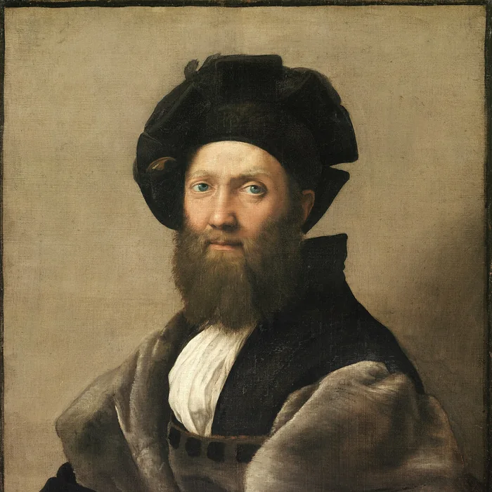
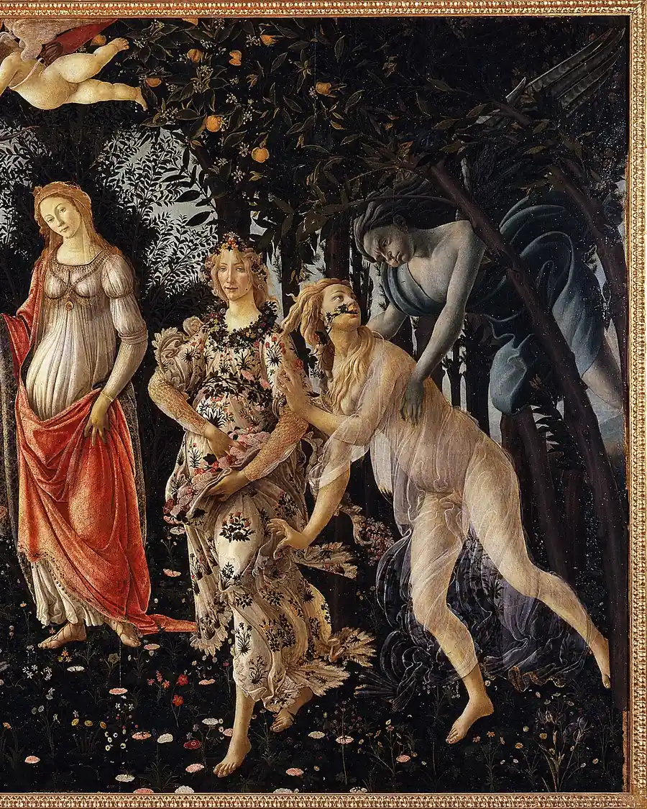
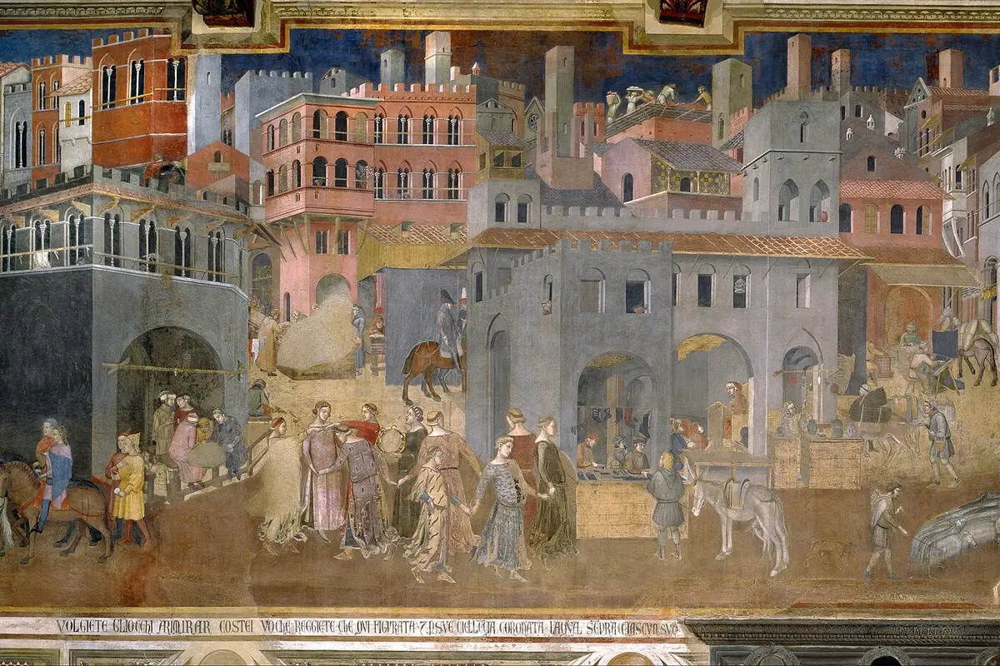
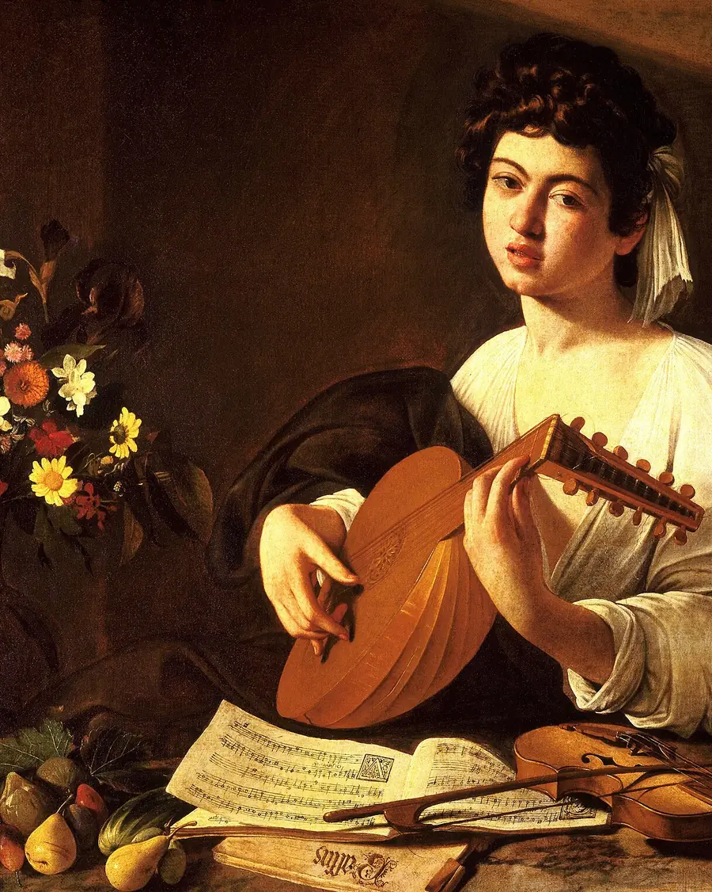

Venezia
presto · скоро
нивоbenvenutaдобре дошла
Вместо да зубрите правила и списъци с думи, влизате в езика чрез музика, разговор, игра и нова самоличност, която сама започва да говори.
Часовете минават без напрежение и без изпитване. Резултатът е голям речников запас за кратко време и, което е по-важно, смелост да проговорите.
Виж курсоветеandiamoда тръгваме
три пътя · докосни град
coraggioсмелост
три сенки · отвори ги
Сугестопедията е метод, разработен от българския лекар, психиатър и физиолог на мозъка проф. д-р Георги Лозанов. През 1978 г. международна експертна група, работеща с UNESCO, достига до извода, че сугестопедията е „като цяло по-висш метод на преподаване“ за много предмети и много типове ученици в сравнение с традиционните методи.
Идеята на д-р Лозанов е, че всеки от нас носи много по-голям потенциал за учене, отколкото използва. Проблемът не е в способностите, а в начина, по който сме учени да учим — с напрежение, оценки и страх от грешка. Сугестопедията предлага точно обратното: релаксирана концентрация, изкуство, музика и игра, за да отвори скритите резерви.
Казвам се Мария Мèскин.
Връзката ми с Италия започна в детството заради моя близка, която живееше там и беше невероятен човек. По-късно усещането стана осъзнато и постепенно се превърна в мечта, в цел, и накрая - в реалност.
Първото ми истинско докосване до страната беше през 1998 година, когато спечелих стипендия на Министерството на външните работи на Италия за следдипломна специализация във Флоренция. Специалността ми беше свързана с античната култура, но италианският език беше условие и необходимост — и точно оттам заниманията ми с него се задълбочиха истински.
През 2006 г. учих италиански език и култура в Университета за чужденци в гр. Сиена.
През 2020 г. в гр. Сливен се проведе обучението ми за сугестопедагог. Мой обучител беше Ванина Бодурова. До 2024 г. бях част от екипа на Център по класическа сугестопедия „Вихровения“, а от есента на 2024 г. водя курсове и уроци самостоятелно.
Защо сугестопедия? Защото години преподаване видях едно и също нещо твърде често: хора, които знаят повече, отколкото си мислят, но мълчат от страх да не сгрешат. Сугестопедията маха точно този страх — и тогава езикът тръгва.


piano pianoполека-лека
На практика един сугестопедичен урок минава през няколко етапа: въвеждане на новия материал, концертен сеанс (активен и пасивен), разработка и представяне. Текстовете се поднасят като истории, не като списъци с думи за наизустяване. Учи се без домашни и без изпитване.
Кое те спира?

При езиково обучение методът работи особено добре, защото хората говорят от първия ден — не чакат да научат достатъчно граматика, за да посмеят.
parla!говори!
Италиански език за начинаещи — класически сугестопедичен курс по оригиналния учебник, в два последователни етапа. От първия ден се говори — текстовете се поднасят като истории, с музика, без зубрене на списъци с думи.
Групите са между 4 и 7 души. Присъствен, с възможност за онлайн при достатъчно кандидати.
Курсовете се провеждат три пъти седмично по 4 учебни часа, сутрешна (10:30–14:00) или обедна (13:00–16:30) група.
3 пъти седмично × 4 учебни часа · 4–7 души · присъствен · онлайн при достатъчно кандидати
Избери си италианско име
новата самоличност започва оттук — страницата ще те нарича така
piacere,
ce l'ho fatta, успях
смелост да проговорите.
хората говорят от първия ден
la luceсветлината
Мария Мèскин
сугестопедагог · италиански език
(зад бившия хотел „Плиска“)
Тел.: 0889781054 Имейл: meskin0810@gmail.coma presto,